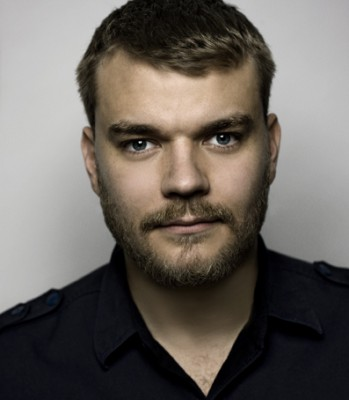
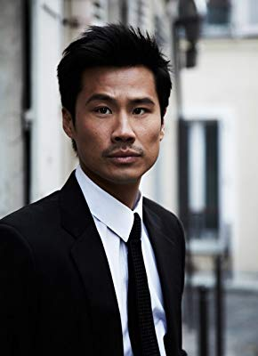

#157 Lucy

 IMDB-Wertung: 6.4 / 10
IMDB-Wertung: 6.4 / 10  Metascore: 61
Metascore: 61 
Die junge Lucy wacht nach einer durchfeierten Nacht auf und bemerkt eine beunruhigende Veränderung an ihrem Körper: sie hat eine frisch genähte Schnittwunde am Bauch. Bald erfährt sie, dass ihr ein Paket mit geheimnisvollen Rauschmitteln eingepflanzt wurde – das sie nun für Gangster transportieren soll. Doch der Kurierdienst schlägt fehl, die gesamte Drogendosis gerät in Lucys Blutbahn. Wie durch ein Wunder kommt sie dabei nicht ums Leben, entwickelt stattdessen ungeahnte Kräfte.
Jahr: 2014
Dauer: 89 Minuten
FSK: 12
Land: Frankreich Studio: UPITonspuren:
Untertitel: Deutsch, Englisch,
Auflösung: 1080p (1920×808) Größe: 4761 MB
Genre: Action, Sci-Fi, Thriller
Regisseur:  Luc Besson
Luc Besson
Drehbuch: Luc Besson
Soundtrack: Éric Serra
Darsteller:
- Scarlett Johansson als Lucy
 Morgan Freeman als Professor Norman
Morgan Freeman als Professor Norman- Min-sik Choi als Mr. Jang
- Amr Waked als Pierre Del Rio
- Julian Rhind-Tutt als The Limey
-  Pilou Asbæk als Richard
- Analeigh Tipton als Caroline
- Jan Oliver Schroeder als German Mule
- Claire Tran als Flight Attendant
- Wolfgang Pissors als Berlin Custom Officer
- Paul Chan als Taipei Surgeon
- Laura D'Arista als Lucy's Mother
- Luc Besson als Doctor , uncredited
- Wendy Kay als Restaurant Patron , uncredited
- Christophe Tek als Wang Man , uncredited
- Nicolas Phongpheth als Jii
- Luca Angeletti als Italian Mule
- Loïc Brabant als Professor
- Pierre Grammont als Professor
- Pierre Poirot als Professor
- Bertrand Quoniam als Professor
- Pascal Loison als Drug Addict
- Pierre Gérard als Airport Doctor
- Isabelle Cagnat als Airport Nurse
-  Frédéric Chau als Cabin Manager
- François Legrand als Business Man Plane
- Bob Martet als Customs Officer
- Cédric Chevalme als Cop Daniel
- Alexis Rangheard als Cop Robert
- Tonio Descanvelle als Cop Sergeant
- Christophe Lavalle als Cop
- Julien Personnaz als Cop
- Matthew Bravais als Student
- Renaud Cestre als Student
- Thibault Segouin als Student
- Claire Zaniolo als Student
- Alessandro Giallocosta als Marco Brezzi
- Sifan Shao als Chinese Doctor
- I. Cheng-Sheng als Jang's Men
- Chung-Wei Chou als Jang's Men
- Mou Syu Li als Jang's Men
- Frank Ma als Jang's Men
- Sheng-En Tseng als Jang's Men
- Liu Hsieh-Min als Mahjong Room Man
- Sandra Abouav als Prehistoric Lucy
- Abel Aboualiten als Prehistoric Man
- Ken Lin als Regent Hotel Concierge #1
- Feng Hsing als Lucy's Driver
- Hao-Hsiang Hsu als Warehouse Man Driver
- Eunyul Hong als Phone Voice Royal Suite
Datei: X:\2014(G-M)\Lucy (2014, FSK12, 1920x808).mkv seit 13.02.2015
Festplatte: HD 2013(I-Z)-2014(A-Z)
 Es gibt insgesamt 136 Filme in der Gruppe '2014(G-M)'
Es gibt insgesamt 136 Filme in der Gruppe '2014(G-M)'